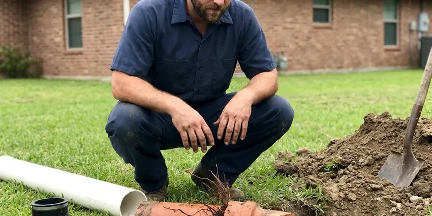

Sewer Repair in Alpharetta, GA
Facing sewer line problems in Alpharetta, GA? HGR Plumbing provides fast and effective sewer repair services to restore your plumbing system.
- Expert Georgia Plumbers
- Durable Repairs
- Fast Sewer Diagnostics
- Upfront Quotes
Stop the Backups and Get Your Sewer Line Fixed in Alpharetta, GA.
Get a flat-rate sewer repair quote with video proof of the problem and a clear plan to fix it.
Skilled Sewer Repair Services in Alpharetta, GA
HGR Plumbing offers complete sewer repair across Alpharetta, GA. Our experienced technicians are equipped to handle any sewer line problem, from minor blockages to major pipe damage caused by tree roots or shifting soil. We use modern diagnostic tools to pinpoint the exact issue fast and recommend the most effective, long-lasting fix.
Our expertise includes:
- Traditional Dig-and-Replace Repairs
- Spot repairs on clay, cast iron, ABS and PVC sewer lines
- Cleanout installation and code-compliant tie-ins at the city main

Additional Plumbing Repair Services in Alpharetta, GA
We offer expert plumbing repair services across Alpharetta, GA to stop leaks, clear blockages, and keep every fixture working the way it should.


Customers
Why Choose HGR Plumbing for Sewer Repair in Alpharetta, GA?
Dealing with a damaged sewer line can be stressful, but HGR Plumbing makes the repair process straightforward. We focus on honest communication and lasting results.
- Video Proof, You see the crack, root mass or belly on screen before you approve a single repair.
- Clean Job Sites, We protect landscaping, haul off spoils and compact the trench when backfilling.
- Local Knowledge, We know the plumbing challenges faced by homeowners in Georgia, including soil conditions and climate impacts on sewer lines.
Citywide Coverage
HGR Plumbing is proud to serve every neighborhood and surrounding area of Alpharetta for all sewer repair needs. Whether you're in the heart of downtown or the quiet suburbs, our team is ready to respond quickly. We understand that sewer issues require immediate attention, and our local presence allows us to provide rapid service.
Experienced Team
The HGR Plumbing team consists of licensed and insured plumbing professionals who are experts in sewer system diagnostics and repair. We routinely update our training to stay ahead of industry best practices, so you receive the most competent service available for your home.
Safety-First Approach
When performing sewer repair, HGR Plumbing makes sure all work meets the highest safety standards and regulatory compliance in Alpharetta. We obtain necessary permits and conduct thorough site assessments to prevent hazards, for a safe and effective repair from start to finish.
Trusted Certified Alpharetta Plumbing Services Professionals
At HGR Plumbing, we take pride in providing licensed, certified plumbing services throughout Alpharetta, GA. Backed by leading industry credentials, our experienced plumbers combine technical skill with genuine customer care. Whether it is repair, installation, or maintenance, we follow strict safety and quality standards to deliver lasting results you can trust.
Call Us Now PHCC Plumbing Contractor Recognition
PHCC Plumbing Contractor Recognition Better Business Bureau (BBB) Accreditation
Better Business Bureau (BBB) Accreditation Angi Certified Pro
Angi Certified Pro ISO 9001 Quality Management Certification
ISO 9001 Quality Management CertificationDependable Sewer Repair Services in Alpharetta, GA
Sewer Pipe Relining in Alpharetta, GA
Sewer pipe relining is a trenchless repair technique where a new, durable pipe is created within the existing damaged one. A flexible, epoxy-impregnated liner is inserted into the old pipe and inflated, curing in place to form a seamless, strong and corrosion-resistant new pipe. This method is well suited for addressing cracks, minor breaks and root intrusion without extensive digging. It extends the life of your sewer system and is an excellent option for preserving landscapes in Alpharetta.

Tree Root Invasion Solutions in Alpharetta
Tree roots are a common culprit for sewer line damage in Georgia, drawn to the moisture and nutrients inside pipes. They can work into tiny cracks, expand and eventually crush or clog the line. Our technicians are adept at diagnosing root intrusion using camera technology. We can remove roots with specialized cutting tools and recommend preventive measures or durable pipe relining options to prevent future invasions, protecting your home's foundation.
Sewer Line Leak Detection and Repair in Alpharetta, GA
Undetected sewer line leaks can lead to unpleasant odors, wet spots in your yard and even structural damage to your home's foundation. HGR Plumbing uses precise leak detection methods to pinpoint the source of the leak, whether it's a minor crack or a major break. Once identified, we provide targeted repairs, from patching small leaks to replacing compromised sections of pipe, giving you a watertight system.
Sewer Line Backups and Blockages in Alpharetta
Sewer backups are usually caused by severe blockages from grease buildup, foreign objects or extensive tree root intrusion. Our team uses HD sewer camera inspections to identify the exact cause and location of the blockage. We then use hydro-jetting or mechanical snaking to clear the obstruction, restoring proper flow to your system and preventing further damage. This approach is very effective for the stubborn clogs often found in older Georgia homes.
Emergency Sewer Repair in Alpharetta
Sewer emergencies, like major backups or foul odors, require immediate attention. HGR Plumbing offers fast response for emergency sewer repair throughout Alpharetta. Our team is on standby to diagnose and fix urgent problems, preventing further damage to your property and restoring sanitation. We put a priority on these critical issues so your home's plumbing is quickly brought back to safe operating condition, even outside of regular business hours.
Cracked and Broken Pipe Repair in Alpharetta
Clay and cast iron sewer pipe crack from soil movement, heavy vehicles and simple age. A cracked section lets sewage leak into the soil and lets dirt fall into the pipe, which leads to recurring clogs. We excavate at the marked spot, cut out the damaged length and install new Schedule 40 PVC with shielded couplings rated for the transition. The repair is tested before we backfill so you know it will hold.
Root Intrusion Repair in Alpharetta, GA
Tree and shrub roots go right for the moisture and nutrients leaking from old sewer joints. Once inside, they grow into dense mats that catch paper and waste. We cut the roots with a mechanical cutter or hydro-jetter, then repair or seal the joint so they cannot come right back. For lines with many rooted joints, we will show you when lining or replacement makes more sense than repeated cleaning.

Sewer Repair Cost Comparison in Alpharetta, GA
A single spot repair is the most affordable fix when the rest of the line is sound. Pipe lining costs more per foot but avoids excavation and works well for long runs under driveways or landscaping. Full replacement is the right call when the pipe is Orangeburg, badly bellied or broken in several places. We lay out all three options with real numbers so you can compare cost against how long the repair will last.
Sewer Repair Near Me in Alpharetta, GA
When you search for 'sewer repair near me' in Alpharetta, GA, HGR Plumbing is your reliable local solution. Our team is strategically located to provide quick response times for all your sewer line needs. We pride ourselves on being a reliable community partner, so expert plumbing help is always just a call away for residents and businesses.
Being local also means we know the soil, the typical pipe materials and the city inspection process here. That knowledge shortens the job and avoids surprises once the trench is open. Call us and we will schedule a sewer camera inspection at a time that suits you.
HGR Plumbing at a Glance
- Licensed and insured plumbers serving Alpharetta, GA
- 24/7 emergency service with same-day scheduling
- Upfront, flat-rate pricing before work begins
- 4.9-star rated by 357+ Georgia customers
Alpharetta Map
Alpharetta Information
- Population
- 67,056
- Area codes
- 470/770/678
- Service area
- Alpharetta and communities within 40 miles
- Nearby
- Johns Creek, Roswell, Dunwoody, Sandy Springs
Many homes in Alpharetta, GA have older sewer joints that separate with age and let in roots. The southern coastal plain has sandier soil and a higher water table, so drainage and root intrusion are bigger concerns there than shifting.
Expert Services
Trust our professionals for reliable HGR Plumbing solutions in Alpharetta, GA.
Our Specialized Plumbing Services in Alpharetta, GA
At HGR Plumbing, we provide a complete range of plumbing services across Alpharetta, GA. From leak detection to full system installations, our team ensures fast, precise, and affordable service for both residential and commercial properties. Explore our core services below:


How Our Sewer Repair Process Works in Alpharetta, GA
At HGR Plumbing, we follow a clear, systematic process to deliver efficient and effective sewer repair for your home.
Request a Quote
Call (770) 470-3778 and tell us about the backups, odors or slow drains you are noticing. We will book a camera inspection, usually for the same day.
Camera and Locate
We inspect the line on video, mark the damaged spot on the surface and note its depth. You get a written quote with every repair option and its price.
Repair and Test
Our crew calls 811, makes the repair and runs water through the line to confirm it flows. We backfill, clean up and send a final video for your files.
Frequently Asked Questions About Sewer Repair in Alpharetta
The cost of sewer repair in Alpharetta, GA can vary widely, typically ranging from $300 for a simple clog removal to $6,000 or more for extensive line replacement using trenchless methods. Factors include the extent of damage, pipe material, accessibility and whether excavation is needed. We provide a detailed estimate after a thorough inspection.
HGR Plumbing stands behind our work with solid warranties on parts and labor for sewer repair services. The warranty period can vary based on the type of repair and materials used, but we always make sure our customers have lasting peace of mind. Details will be provided with your estimate.
Standard policies frequently exclude wear, tear and root damage to the sewer line itself, though they may cover resulting water damage inside the home. Some insurers offer a service line endorsement. We provide video and written documentation if you file a claim.
Most spot repairs are completed in one day, including excavation and backfill. Larger replacements or jobs that need a city right-of-way permit can take two to four days. We give you a timeline before we start.
Sewer repair is complex and best left to licensed professionals due to the specialized equipment required, potential health hazards and strict local plumbing codes. Attempting DIY repairs can lead to further damage, costly mistakes and even safety risks. Always consult with a professional plumber.
Key signs you need sewer repair include multiple slow drains or frequent backups, gurgling noises from toilets or drains, foul sewer odors in or around your home, soggy spots in your yard or an unexplained increase in your water bill. If you notice any of these, it's wise to call for an inspection.
Yes, major sewer line repairs or replacements in Alpharetta, GA typically require a plumbing permit from the local authorities. This ensures the work meets safety and code standards. HGR Plumbing handles all necessary permitting for you, so your repair is fully compliant.
Yes. Our sewer repairs come with a written warranty on workmanship, and the pipe and fittings carry manufacturer warranties. We explain exactly what is covered before the job starts.
What People Are Saying About Our Plumbing Experts?

Laura S.
I scheduled a water heater replacement, and the team made the process smooth and affordable. The new unit works perfectly, and they cleaned up after completing the job.
Water Heater Replacement · Johns Creek, GA
Emily R.
I called HGR Plumbing for plumbing repair, and the technician was fast, polite, and thorough. They explained the problem clearly and fixed it the same day. I will definitely hire them again. Highly recommended!
Plumbing Repair · Marietta, GA
Daniel K.
A pipe burst at 11 pm and they actually answered. The plumber showed up within the hour, shut everything down, and had us back to normal the next morning. Could not ask for more.
Emergency Plumbing · Sandy Springs, GA
Mark T.
When our office needed drain cleaning, HGR Plumbing provided quick, reliable service. The plumber arrived on time and made sure every drain flowed perfectly before leaving. Very satisfied.
Drain Cleaning · Dunwoody, GA
Patricia H.
We had a slab leak that two other companies could not find. HGR Plumbing located it in under an hour, explained our options, and the price matched the quote to the dollar.
Slab Leak Repair · Roswell, GA
Robert G.
The trenchless sewer replacement saved our front yard. They walked us through the camera inspection footage first so we knew exactly what we were paying for.
Sewer Line Replacement · Roswell, GA